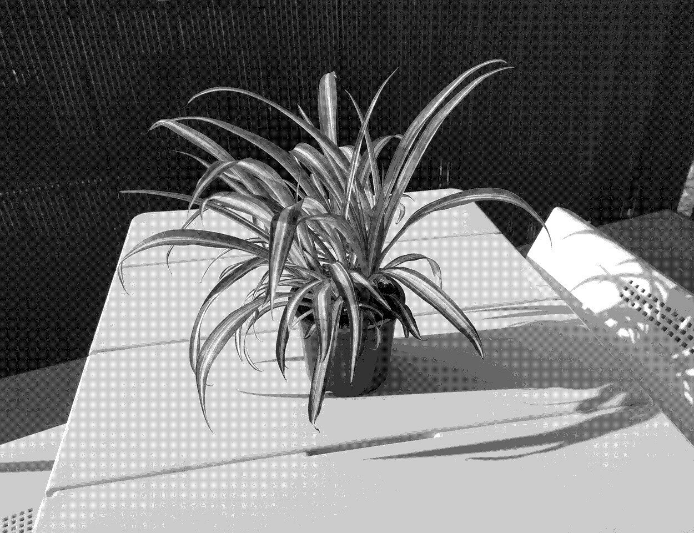

Chlorophytum Comosum

Care
The spider plant. Very popular and can thrive in many conditions.
- Best temperatures between 18°C and 32°C, will suffer below 2°C
- Reduces indoor air pollution
- Likes indirect light
- Keep the soil moist during spring and summer, water moderately during fall and winter
- Prone to tip burn, which can be caused by a lack of aforementioned conditions, or salt and chemical in public tap water. Cut down brown tips if that occurs.
- Make spiderettes regularly: plant them after they grow roots on their own.